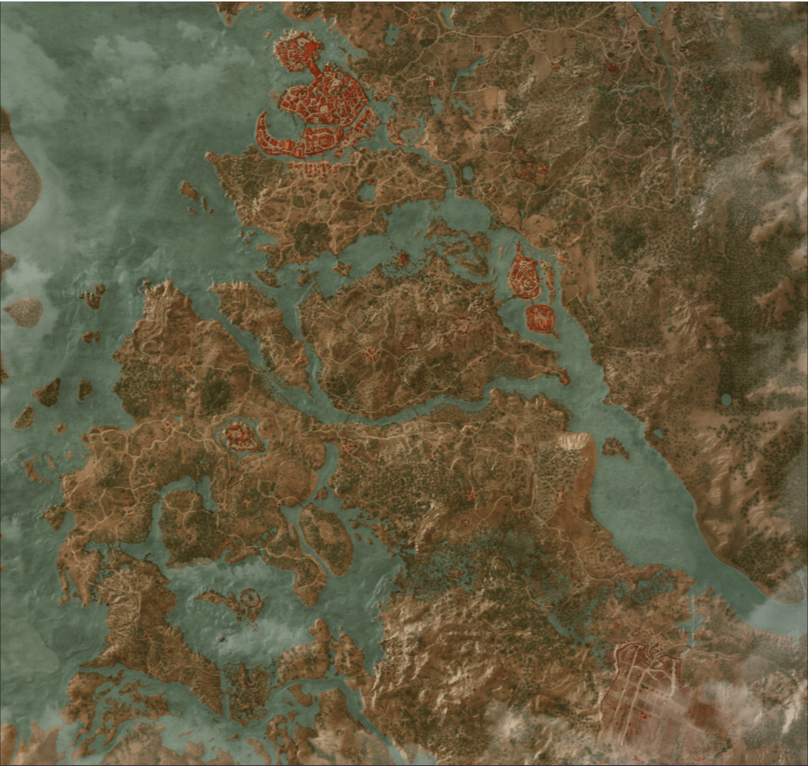

Karte von The Witcher 3
The Witcher 3 hat eine riesige Karte. Die Karte ist in insgesamt fünf gebiete aufgeteilt,
Novigrad und Velen,
Skellige, Weissgarten, Kaer Morhen, Tousaint.
Damit entspricht die begehbare Karte in Witcher 3, ohne Meer, einer
Fläche von rund 54 km².
Laut den Entwicklern soll die Karte von Witcher 3 rund 35-mal größer sein als die Karte
von Witcher 2.
Dazu muss man aber anmerken das Witcher 2 natürlich kein Open World-Spiel ist
und das die Entwickler
in dieser Rechnung natürlich von 136 km² ausgehen.
136km² ist die Ganze Karte von The Witcher mit Meer.
Die ganze Karte hat unzählige Fragezeichen
die man alle Erkunden kann, bei diesen Fragezeichen handelt es sich
um
Banditenlager, Schätze, Monsternester, Höhlen, Ruinen, Orte der Macht (bei jedem Solchen Ort gibt es ein Fähigkeitspunkt)
und noch Vieles mehr. Es gibt auch Schriften die Beschreibungen zu Schätzen beinhalten, die man finden kann
und
nicht auf der Karte verzeichnet sind. Bei der Witcher Karte hat man genug zu tun.
Kaer Morhen
Kaer Morhen ist eine unzugängliche Bergfeste, in der seit Jahrhunderten die Hexerzunft ihr Hauptquartier hat.
Der Name leitet sich aus der Elfensprache ab, in der "Caer a'Muirehen" so viel wie "Festung vom Alten Meer" heißt.
Die Burg hat ihre besten Zeiten längst hinter sich, Zinnen und Burggraben sind verfallen, ein kalter Wind weht
durch die geräumigen Hallen. Jetzt lebt nur noch eine Handvoll Hexer hier, aber einst absolvierten viele Knaben
die grausame Ausbildung im berüchtigten "Spießrutensaal" von Kaer Morhen. Vor einigen Jahren hat eine Horde Fanatiker,
deren Hass von verschiedenen, verleumderischen Veröffentlichungen über die Hexer geschürt wurde, Kaer Morhen in
Schutt und Asche gelegt. Allerdings hätte der Mob die Festung nicht ohne Hilfe von Magiern erobern oder vernichten
können. Praktisch alle, die sich in der "Festung vom Alten Meer" zur Zeit des Angriffs aufhielten, starben. Von
den Hexern, die Kaer Morhen als ihr Zuhause betrachteten, überlebten nur die wenigen, die damals auf Reisen waren.
Die Gebeine der Verstorbenen wurden im Festungsgraben belassen, damit sie an das Massaker, genährt vom Hass auf
die Wechselbälger, erinnern sollen.

Novigrad & Velen
Novigrad ist die Hauptstadt Redaniens. Neben dem Sitz Radovids finden sich in der Hafenstadt eine Bankfiliale Vivaldis,
das Freudenhaus Passiflora, ein Tempel des Ewigen Feuers, der Westmarkt und die Herberge Lanzenspitze. Velen ist
die nordwestlichste Landschaft der Königreichs Temerien im Mündungsgebiet des Pontar. Sie grenzt, durch den Pontar
getrennt im Norden an das Königreich Redanien und im Westen an das Nördliche Meer. Zudem ist Velen durch zwei große
Brücken mit Oxenfurt und Novigrad verbunden und ist daher ein wichtiger Handelsdurchgang zwischen Temerien und Redanien.
Velen ist hauptsächlich von Küstengebieten, Sümpfen und dem Flussufer des Pontars geprägt. Zudem gehören sich noch
zahlreiche kleinere Wälder und Freiflächen, die teilweise für Ackerbau genutzt werden, zum Landschaftsbild.
Im dritten Nilfgaard-Krieg wurde ganz Temerien, und damit auch Velen durch das Kaiserreich erobert und stark verwüstet.
Durch diesen Konflikt sind mehr als die Hälfte der Bewohner Velens gestorben oder zu Flüchtlingen geworden und hat
die Monsterpopulation im Gebiet erheblich ansteigen lassen. Der Landstrich, wo die Nilfgaarder Kampfverbände mit
den Truppen der Nördlichen Königreiche zusammenprallten und sich die Front ständig von Süd nach Nord und zurück bewegte,
wird auch das Niemandsland genannt (engl. No Man’s Land). Was dazwischenliegt, ist ein trostloses, zerstörtes und
verbranntes Land, wo Menschen getötet, vergewaltigt und gehängt werden das ist Velen, das ist das Niemandsland.

Skelligen
Die Skelligen oder auch die Skellige-Inseln gehören zu den nördlichen Königreichen und liegen im nördlichen Meer.
Die Skelligen sind von der Westküste von Cidaris und Verden sowie vom Nordwesten her von Cintra zu erreichen.
Auf den Skellige-Inseln wird ein eigener Dialekt gesprochen. Ard Skellig ist die größte Insel der Skellige-Inseln
im nördlichen Meer und gleichzeitig die höchste über den Meeresspiegel. Crach an Craite hat sich hier in der
Festung Kaer Trolde niedergelassen. Ard Skellig und Spikeroog werden im Roman "Der Schwalbenturm" ("Wieża Jaskółki")
von einer Fischerin der Skellige-Inseln erwähnt. Gemeinsam mit ihren Kameradinnen ist ihnen zwischen diesen beiden
Inseln ein einzigartiger Fang geglückt. Ard Skellig ist ein Begriff aus der alten Sprache und bedeutet "Berg von
Skellige" bzw. "Spitze von Skellige". An Skellig ist eine der größeren Inseln der Skellige Inselgruppe im nördlichen Meer.
Sie liegt nördlich zwischen Ard Skellig und Spikeroog. Auf An Skellig herrscht der Clan Tuirseach, der mindestens
zwei Könige hervorgebracht hat. An Skellig ist ein Begriff aus der alten Sprache und bedeutet "Kleine Skellig".
Weissgarten
Weißgarten ist ein kleines Dorf in The Witcher 3: Wild Hunt, das östlich der ehemaligen temerischesn Hauptstadt
Wyzima liegt. In seiner Umgebung treibt ein Greif sein Unwesen. Als Geralt und Vesemir auf ihrer Suche nach
Yennefer in Weißgarten ankommen, haben Nilfgaarder Truppen das Gebiet besetzt. Weissgarten ist ausserdem das
Startgebiet des Spieles. Es ist ein kleiner Ort in dem man das Spiel gut kennenlernt.
Tousaint
Toussaint ist eine Provinz von Nilfgaard und vor allem berühmt wegen der erlesenen Weine, die dort auf vulkanischer
Erde angebaut und gekeltert werden. Toussaint liegt am Berg Gorgo, einem Ausläufer des Amell-Gebirgszuges.
Es wird von Herzogin Anna Henrietta regiert. Die Provinz hat keine eigenen Streitkräfte und ebenso keine Büttel.
Recht und Ordnung werden von einer Handvoll Rittern aufrecht gehalten. Toussaint ist eines von Nilfgaards "Efeustaaten".
Tradition wird in Toussaint in Ehren gehalten. Feiertage sind daher etwas Besonderes, dem Achtung entgegengebracht wird.